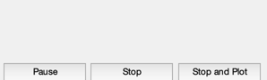
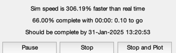
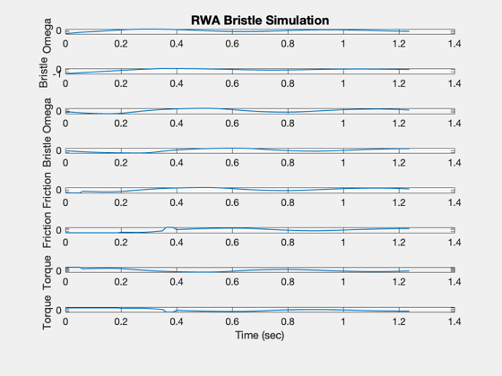
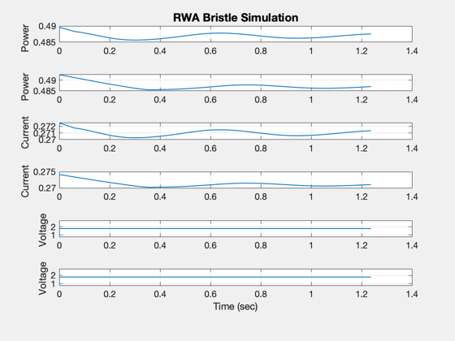
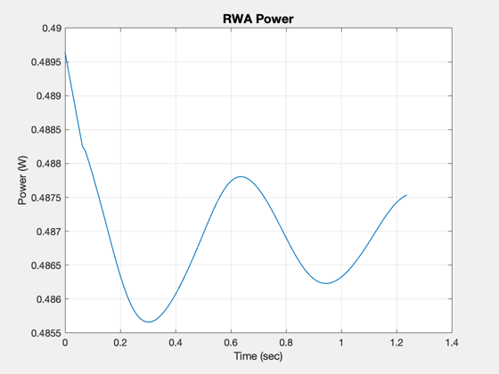

Test the reaction wheel model with bristle friction.
A bristle friction model adds another state for the bristles.
------------------------------------------------------------------------
See also Plot2D, TimeGUI, RK4, RWABristle
------------------------------------------------------------------------
Contents
Global for the TimeGUI
global simulationAction
simulationAction = ' ';
Simulation parameters
dT = 0.0125;
nSim = 100;
Find the maximum static torque
RWABristle('clear');
RWABristle('initialize');
d = RWABristle('get default datastructure');
tMax = RWABristle('get maximum static torque');
Input the friction model
d.friction(1).fStatic = 0.8*tMax;
d.friction(1).fCoulomb = 0.4*tMax;
d.friction(1).vStribeck = 0.1;
d.friction(1).sigma0 = 1;
d.friction(1).sigma1 = 1e-4;
d.friction(1).sigma2 = 5e-4;
d.friction(1).maxC = 0.1/dT;
d.friction(2) = d.friction(1);
Reinitialize
RWABristle( 'clear' );
RWABristle( 'initialize', d );
Initialize the time display
[ ratioRealTime, tToGoMem ] = TimeGUI( nSim, 0, [], 0, dT, 'RWA Bristle Simulation' );

Initial conditions
x = [-0.5; -1;0;0];
xPlot = zeros(14,nSim);
tPlot = zeros( 1,nSim);
t = 0;
Commanded voltage
RWABristle( 'put voltage', [10;10] );
for k = 1:nSim
[ ratioRealTime, tToGoMem ] = TimeGUI( nSim, k, tToGoMem, ratioRealTime, dT );
x = RK4('FRWABristle',x,dT,t);
tPlot(k) = t;
xPlot(:,k) = [x;...
RWABristle( 'get friction' );...
RWABristle( 'get torque' );...
RWABristle( 'get power' );...
RWABristle( 'get current' );...
RWABristle( 'get motor voltage' )];
t = t + dT;
switch simulationAction
case 'pause'
pause
simulationAction = ' ';
case 'stop'
return;
case 'plot'
break;
end
end
yLbl = {'Omega' 'Bristle ' 'Omega' 'Bristle ' 'Friction' 'Friction' ...
'Torque' 'Torque' 'Power' 'Power' 'Current' ...
'Current' 'Voltage' 'Voltage '};
Plot2D( tPlot, xPlot(1: 8,:), 'Time (sec)', {yLbl{1: 8}}, 'RWA Bristle Simulation')
Plot2D( tPlot, xPlot(9:14,:), 'Time (sec)', {yLbl{9:14}}, 'RWA Bristle Simulation')
Plot2D( tPlot, xPlot(9,:), 'Time (sec)', 'Power (W)', 'RWA Power')
   